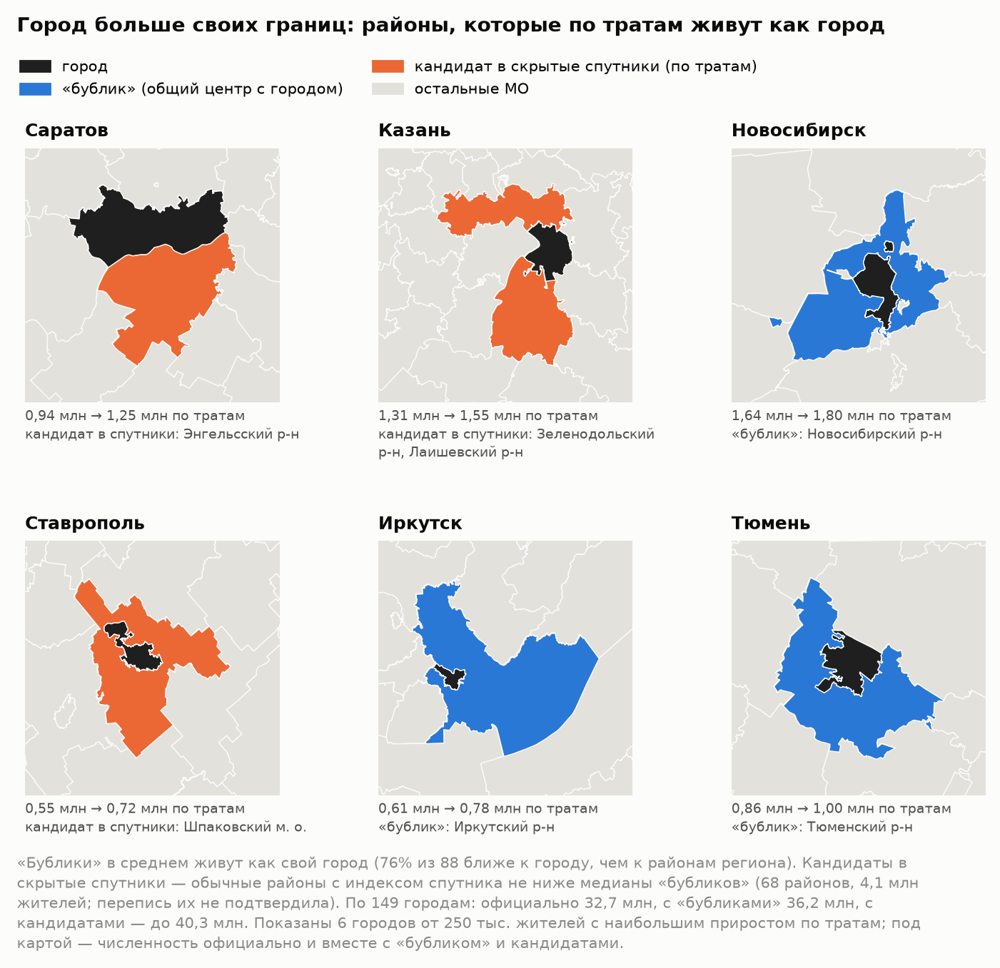
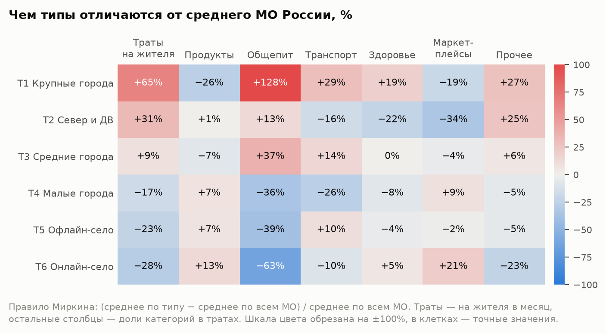
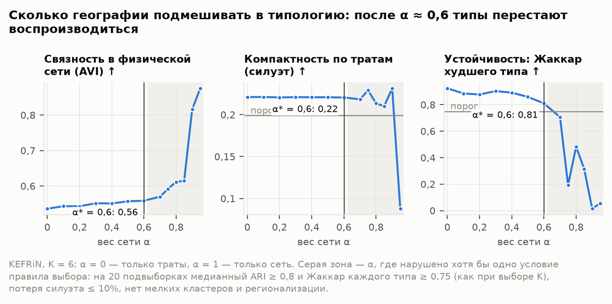
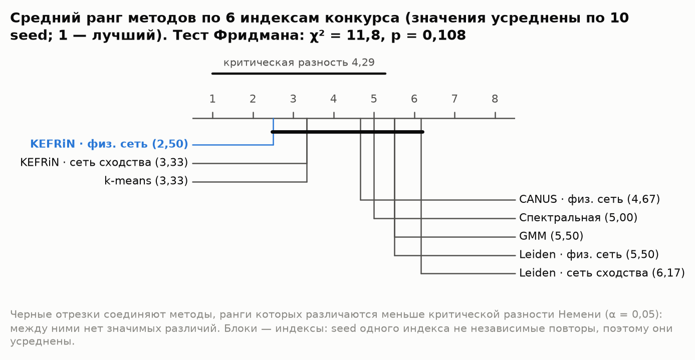
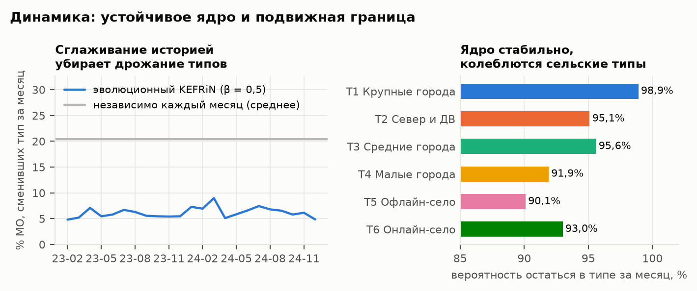
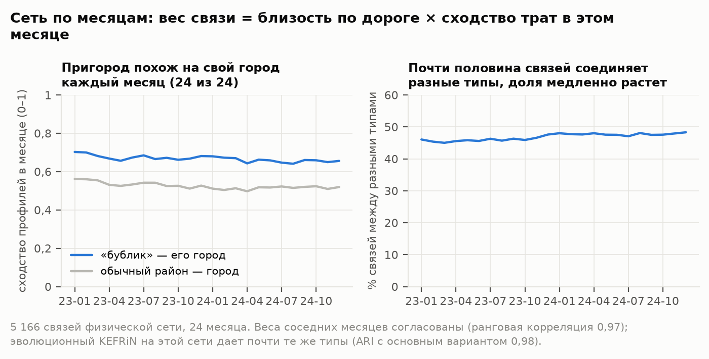
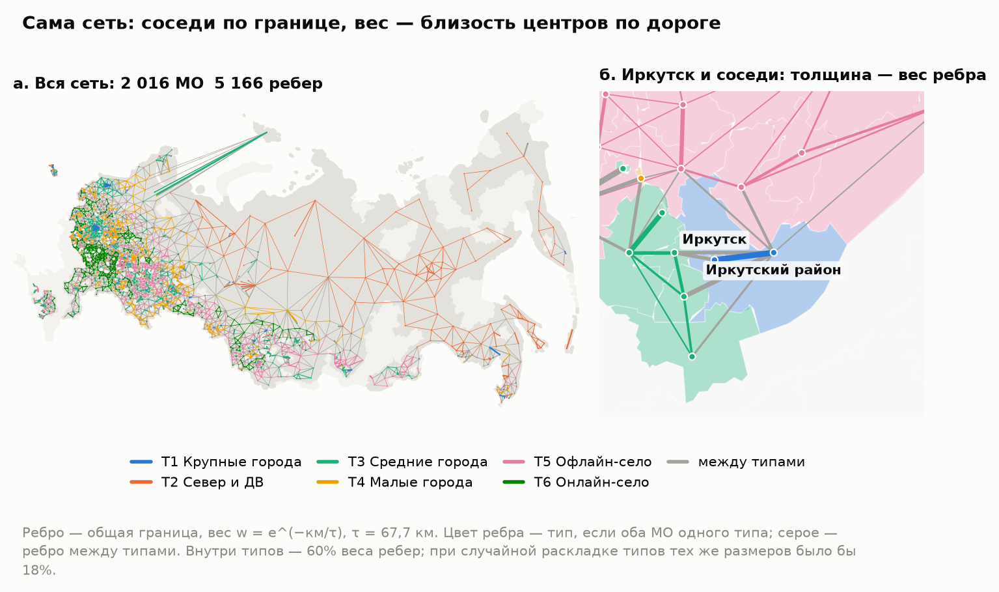

Рис. 1. Пример главной находки: Иркутский район по данным Росстата, СберИндекса и переписи 2010 года.
По тратам район относится к тому же типу, что и его город (T1).
Рис. 1. Пример главной находки: Иркутский район по данным Росстата, СберИндекса и переписи 2010 года.
По тратам район относится к тому же типу, что и его город (T1).Типы локальных экономик России по тратам жителей: динамическая атрибутированная сеть муниципальных образований. Методологический отчет. Онлайн-конкурс СберИндекса 2026, номинация «Кластеризация». Автор: Дмитрий Юшков.
Как читать. Первые страницы — резюме всей работы: «Коротко», метод в шести шагах и ответы на три вопроса конкурса.
Краткая версия отчета на нескольких страницах — report_short.pdf рядом с этим файлом и на лендинге.
Дальше каждый раздел начинается с плашки «Главное». Термины объяснены в глоссарии в конце, детали проверок — в приложениях. Интерактивная версия с картой всех МО — на лендинге: https://demondevils666.github.io/research-2026/. Код, конфиги и инструкция
по запуску — https://github.com/demondevils666/research-2026.
Коротко.
- Что построено. Сеть из 2 016 муниципальных образований (МО). Узел описан структурой и уровнем трат жителей по данным СберИндекса за 24 месяца. Ребро соединяет соседей по границе, и вес ребра тем больше, чем ближе их центры по дороге. Совместная кластеризация признаков и сети (KEFRiN) выделяет 6 типов местных экономик; число типов и вес сети выбраны согласованно, по воспроизводимости на подвыборках.
- Главная находка: город больше своих границ. Ее можно проследить в три шага.
- Факт. У 76% районов вокруг городов с общим административным центром («бубликов») профиль трат ближе к своему городу, чем к районам своего региона (88 пар); у обычных соседних районов — у 51%. При этом по Росстату 89% жителей «бубликов» — сельское население. Сильнее всего это у столиц регионов: 20 «бубликов» из 20 против 42% у обычных соседей. У остальных городов различие по профилю меньше и статистически незначимо (66% против 55%; разбивка — по 64 парам полной панели), но по переписи и оттуда чаще ездят на работу в другой населенный пункт (раздел 2.1).
- Механизм. Росстат считает зарплату по месту работы (по организациям на территории МО), а СберИндекс траты — по месту жительства. Если житель района работает в городе, его зарплата попадает в статистику города, а траты — в статистику района. Перепись 2010 года это подтверждает: в «бубликах» доля работающих в другом населенном пункте на 25,7 п. п. выше, чем у типичного района своего региона, у обычных соседей города — на 7,7 п. п. (20 регионов).
- Следствие. Официальная статистика не видит пригородную экономику: по типу населенного пункта «бублики» — село, а зарплата их жителей засчитывается городу, где они работают. Во всех 146 «бубликах» живут 5,7 млн человек. Реальные города больше официальных: у 149 городов, где у пригорода есть данные о тратах, официально 32,7 млн жителей, а вместе с «бубликами» — 36,2 млн. Для оценки благосостояния, программ поддержки и планирования агломераций нужен взгляд по месту жительства — его дают траты.
- С отчетом лаборатории СберИндекса это согласуется. Все 4 пригорода Дальнего Востока, которые она назвала в своем отчете, попали в наши «городские» типы (T1, T3). Районов всего 4, и у 2 из них города нет в данных, поэтому это сверка, а не строгая проверка.
- Вывод о методе. Тип территории задает поведение жителей, а не соседство: при выбранном весе сети α = 0,6 разбиение почти совпадает с разбиением только по тратам (ARI 0,97): сеть передвинула лишь 28 МО из 2 016 — пограничных, а если вес сети в KEFRiN больше 0,6, типы перестают воспроизводиться. Это вывод для нашей постановки — KEFRiN, сеть соседства, 6 типов на всю страну.
| Шаг | Что делаем | Раздел |
|---|---|---|
| 1. Данные | 2 016 МО × 24 месяца безналичных трат жителей по шести категориям (СберИндекс). Росстат, перепись 2010 года и отчеты лаборатории в расчет типов не входят — ими типы только проверяются | 1.1 |
| 2. Признаки | CLR шести долей + ln(траты) − медиана месяца: структура трат и уровень относительно страны в том же месяце (без инфляции и сезона) | 1.2 |
| 3. Сеть | w = общая граница × e^(−км/τ), τ = 67,7 км: соседи по границе, чем ближе центры по дороге, тем сильнее связь; сеть не зависит от трат. Еще пять правил ребра — для сравнения | 1.3, 4.3 |
| 4. KEFRiN | Совместная кластеризация трат и сети: K = 6 — по воспроизводимости на подвыборках, вес сети α = 0,6 — той же проверкой | 4, прил. Б |
| 5. Динамика | Эволюционный KEFRiN по месяцам (β = 0,5) и схема MONIC: смены типа у МО, судьба типов целиком, содержание типов | 6 |
| 6. Качество и проверка | Шесть индексов конкурса, сравнение 8 методов на 10 seed, устойчивость, проверка Росстатом, переписью 2010 года и отчетом лаборатории | 3, 5, 8 |
| Вопрос | Короткий ответ | Подробно |
|---|---|---|
| Что именно найдено? | Шесть типов местных экономик — от крупных городов до аграрных районов, где доля маркетплейсов выше всего. Пригороды тратят как свой город, хотя статистика считает их селом. Поведение важнее географии: сеть почти не меняет типы и не создает их. | разделы 2–4 |
| Почему этому можно доверять? | Проверка данными, которые в расчет не входили: Росстат и перепись 2010 года; с ними согласуется отчет лаборатории. Тип сравниваем с простой базой — группами по одному уровню трат. Отрицательные результаты показаны: налоговый след пригородов, скрытые спутники по переписи, незначимые различия методов. Прогон воспроизводится байт в байт. | разделы 2, 3.2, 5.4, 8, 11 |
| Как это использовать дальше? | Сверять зарплату Росстата с тратами СберИндекса, чтобы не принять пригород за бедное село; сравнивать МО с похожими из других регионов («двойниками»): искать у них применимый опыт и сравнивать рост трат. | раздел 9 |
Рис. 1. Пример главной находки: Иркутский район по данным Росстата, СберИндекса и переписи 2010 года.
По тратам район относится к тому же типу, что и его город (T1).
Содержание. 1. Данные, признаки, сеть · 2. Главная находка: город больше своих границ · 3. Шесть типов местных экономик · 4. Сколько географии нужно типологии · 5. Методы и ICVI · 6. Динамика · 7. Пространство · 8. Надежность · 9. Применение · 10. Ограничения · 11. Воспроизводимость · Приложения · Литература · Глоссарий
Главное. Типы строим только по тратам СберИндекса: 2 016 МО, 24 месяца, 7 признаков (структура и уровень трат). Сеть строим только по географии: общая граница и расстояние по дороге между центрами. Сеть не повторяет признаки, поэтому можно проверить, совпадают ли поведение и география. Росстат, перепись и работы лаборатории в расчет не входят: ими типы только проверяются.
| Источник | Что берем | Роль |
|---|---|---|
| СберИндекс: потребительские безналичные расходы по МО (архив хакатона) | оценка средних трат жителя по 5 категориям и в целом, руб./мес., 2 190 МО, 2023-01 … 2024-12 | признаки |
| СберИндекс: справочник границ и преобразований МО | тип МО, центр, границы, пары «город + окружающий район» | сеть и группы сравнения |
| СберИндекс: автодорожные расстояния между МО | км по дороге между центрами | вес ребра |
| СберИндекс: индекс доступности рынков, индекс покупательской мобильности | показатели МО | только внешняя проверка |
| Росстат, БД ПМО (выгрузка «Если быть точным») | население, зарплата, занятость по ОКВЭД2, торговые площади и оборот розницы, НДФЛ в доходах местных бюджетов | только внешняя проверка |
| Всероссийская перепись населения 2010 года, региональные издания, том 7 | занятые по территории нахождения работы, по городским округам и районам, 20 регионов | только внешняя проверка |
Используем только траты СберИндекса. Росстат в кластеризацию не входит: так видно, что именно говорят о территории данные о тратах, а официальная статистика остается независимой проверкой.
Какие показатели рассматривали. Условие предлагает несколько наборов данных. В признаки вошли только траты, остальные показатели служат независимой проверкой.
| Показатель | Роль | Почему |
|---|---|---|
| Траты жителей по категориям (СберИндекс) | признаки | есть помесячно у всех 2 016 МО панели — это нужно для динамической сети; описывают жителей по месту жительства |
| Индекс доступности рынков (СберИндекс) | проверка | по сути свертка той же дорожной матрицы с населением: в признаках он дублировал бы сеть; один год; есть у 2 004 МО панели из 2 016 |
| Покупательская мобильность (СберИндекс) | проверка | есть у 270 МО панели, почти только на Северо-Западе; один год |
| Зарплата и занятость по отраслям (Росстат) | проверка | годовые и по месту работы — именно этот взгляд мы сравниваем с тратами; в признаках они сделали бы проверку раздела 3.2 круговой |
| Население и доля горожан (Росстат) | проверка | сделали бы типы классами по размеру и «городскости»; оставлены для интерпретации |
clr_j = ln(доля_j) − среднее ln(долей). Без этого рост одной доли автоматически «уменьшает» остальные и искажает
расстояния.ln(траты на жителя) − медиана ln по всем МО в этом месяце. Вычитание медианы
месяца снимает инфляцию и общую сезонность. Остается положение МО относительно страны.w_ij = 1[у МО i и j общая граница] · exp(−d_ij / τ)
Почему не сходство трат. Такая сеть не зависит от признаков. Если строить ребра из тех же трат, атрибуты и сеть становятся двумя взглядами на одно и то же. Независимая сеть позволяет задать содержательный вопрос: совпадают ли поведение и география? Пять других правил ребра, включая сходство трат, сравниваются в разделе 4.3.
Сеть по месяцам. Условие требует сеть для каждого месяца. Узлы и ребра берем из физической сети, а вес ребра
в месяце t умножаем на сходство соседей в этом месяце:
W_t(i, j) = w_ij · exp(−‖x_i(t) − x_j(t)‖² / 2h²), h = 1,86 (медиана расстояний по ребрам за все месяцы).
Получается последовательность G_t = (V, E, W_t, X_t): топология постоянна (дороги и границы не меняются по месяцам),
а вес ребер и атрибуты меняются. Что она показывает — в разделе 6.
Главное. У «бубликов» — районов вокруг города с общим центром — профиль трат ближе к своему городу, чем к районам своего региона: так у 76% из 88 пар, у обычных соседних районов — у 51%. Сильнее всего это у столиц регионов; у остальных городов различие по профилю незначимо (раздел 2.1). Причина в том, что зарплату считают по месту работы, а траты — по месту жительства. Перепись 2010 года это подтверждает для «бубликов» (+25,7 против +7,7 п. п. у обычных соседей), но не для кандидатов в скрытые спутники (p = 0,716). Налоговый след в местных бюджетах не найден (раздел 2.5).
«Бублик» — район вокруг города, у которого общий с городом административный центр (Томский район вокруг Томска, Хабаровский вокруг Хабаровска). Такие пары отмечены в справочнике СберИндекса, всего их 146.
Контроль — обычные районы, которые тоже граничат с городским округом своего региона (если таких городов несколько, берется ближайший по дороге). Если «бублик» похож на город только потому, что граничит с ним, контроль покажет то же самое. Город другого региона в контроль не берем: район сравнивается с районами своего региона, и чужой город занизил бы близость сам по себе.
Число пар зависит от проверки: у одних МО нет всех месяцев данных, у других в регионе мало обычных районов для сравнения.
| Выборка | «Бублики» | Контроль | Где используется |
|---|---|---|---|
| Все пары справочника СберИндекса | 146 | — | масштаб: 5,7 млн жителей |
| Есть данные о тратах (полная панель или у обоих МО ≥ 12 мес.) | 90 | — | функциональные города (раздел 2.3) |
| Профиль трат, все пары с данными | 88 | 283 | основная цифра: 76% против 51% |
| Полная панель (24 мес.) | 65 | 286 | синхронность и зарплата (таблица ниже) |
| Профиль в полной панели (в регионе не меньше трех обычных районов) | 64 | 283 | таблица ниже, рис. 2, разбивка по столицам (20 + 44) |
| Перепись 2010 года (есть данные о поездках) | 40 | 64 | механизм (раздел 2.2) |
| Контроль с городами других регионов | — | 351 | чувствительность |
| Измерение | «Бублик» — свой город | Обычный район — соседний город | Тест | Что это значит |
|---|---|---|---|---|
| Профиль трат ближе к своему городу, чем к районам своего региона (64 пары) | 77% (ДИ 66–86%) | 51% (ДИ 45–57%) | p = 0,002 | тратит как свой город, а не как сельские соседи |
| Синхронность помесячных изменений трат (средняя корреляция) | 0,51 (ДИ 0,43–0,59) | 0,30 (ДИ 0,26–0,34); район — чужой город: 0,16 | p < 0,001 | траты движутся вместе с городом |
| Траты идут за местной зарплатой Росстата? (корреляция отношений район/город по тратам и по зарплате) | −0,24 (ДИ от −0,45 до 0,01): связи нет | 0,48 (ДИ 0,38–0,56) | p < 0,001 | у обычного района выше зарплата — выше и траты; у «бублика» связи нет: зарплату его жителям платят в городе |
p-значения в таблице — перестановочные тесты, где каждая пара — отдельное наблюдение. Пары с общим городом не независимы, поэтому p — ориентир, а не точный уровень (раздел 10, п. 13).
 Рис. 2. Три независимых измерения: «бублик» против обычного соседнего района (полная панель: 64 пары для профиля,
65 — для синхронности и зарплаты; основная цифра на всех 88 парах — 76%).
Рис. 2. Три независимых измерения: «бублик» против обычного соседнего района (полная панель: 64 пары для профиля,
65 — для синхронности и зарплаты; основная цифра на всех 88 парах — 76%).
Три источника считают разное.
Если жители «бублика» работают в городе, местная зарплата их не описывает, а траты описывают. С этим согласуются все три меры раздела 2.1.
Прямая проверка. Данных о поездках на работу у СберИндекса нет, их дает перепись. В региональных изданиях Всероссийской переписи населения 2010 года (том 7) есть таблица «Занятое в экономике население… по территории нахождения работы» по каждому городскому округу и району. Мера — доля занятых, которые работают в другом населенном пункте своего региона. Она учитывает и поездки в соседнее село или свой райцентр, а ее уровень сильно различается по регионам (медиана районов — от 3,5% до 40,8%). Поэтому сравниваем с типичным районом своего региона: отклонение от медианы его районов.
Почему перепись 2010 года, а не свежие данные. Это последняя перепись, в которой таблица «по территории нахождения работы» опубликована по районам и городским округам. В итогах переписи 2020 года (том 10 «Рабочая сила», таблицы 9–11) место работы дано по России и субъектам; региональные издания с разбивкой по районам найти не удалось. Разрыв в 13–14 лет делает проверку консервативной, а не бесполезной:
Слабое место — новые пригороды: районы, которые стали пригородами после 2010 года, перепись не увидит. Это может быть одной из причин, почему не подтвердились скрытые спутники.
| Группа | МО | Среднее отклонение, п. п. (95%-интервал) | Медиана отклонения, п. п. | Доля выше медианы региона |
|---|---|---|---|---|
| «Бублики» | 40 | +25,7 (21,3–30,3) | +25,8 | 93% |
| Скрытые спутники (найдены по тратам) | 22 | +6,6 (0,3–13,4) | +3,4 | 59% |
| Прочие соседи города (контроль) | 64 | +7,7 (4,6–10,6) | +6,6 | 69% |
| Остальные МО | 510 | −2,9 (от −3,7 до −2,1) | −2,8 | 32% |
 Рис. 3. Перепись 2010 года: насколько чаще, чем в типичном районе своего региона, жители групп МО работают в другом
населенном пункте (среднее отклонение, отрезок — 95%-интервал бутстрапа).
Рис. 3. Перепись 2010 года: насколько чаще, чем в типичном районе своего региона, жители групп МО работают в другом
населенном пункте (среднее отклонение, отрезок — 95%-интервал бутстрапа).
Индекс спутника — среднее z-оценок трех мер раздела 2.1. У каждой знак «больше = больше похож на свой город»:
Состав индекса и порог зафиксированы до расчета.
| Мера | Насколько отличает «бублики» от обычных районов, AUC (95%-ДИ) |
|---|---|
| Индекс спутника | 0,69 (0,62–0,76) |
| Близость профиля | 0,73 (0,66–0,79) |
| Синхронность сверх фона | 0,70 (0,63–0,77) |
| Траты сверх зарплаты | 0,57 (0,49–0,64) |
AUC — вероятность, что случайный «бублик» получит индекс выше случайного обычного района (0,5 — не различает). Заранее задан порог: если AUC индекса ниже 0,7, найденные районы подаются только как кандидаты. Индекс порог не прошел (AUC 0,69). Поэтому найденные районы мы называем только кандидатами.
Зарплатная мера на уровне отдельной пары слабая: эффект «место работы против места жительства» виден как связь в группе, а не как метка района. Без нее AUC = 0,74, а список спутников почти тот же: 45 из 48 совпадают.
Скрытый спутник — обычный район с индексом не ниже медианы «бубликов». Таких 68 (24% обычных районов при городах), в них 4,1 млн жителей. При более мягком пороге (нижняя квартиль «бубликов») их 137, при более строгом (верхняя квартиль) — 11.
Проверка мерами, которые в индекс не входили:
| Мера | Скрытые спутники | Остальные обычные районы | Тест |
|---|---|---|---|
| Расстояние до города по дороге, км (медиана) | 30 | 52 | p < 0,001 |
| Изменение населения за 2023 г. (медиана) | −0,8% | −1,1% | p = 0,035 |
| Доля горожан (медиана) | 0,57 | 0,28 | p = 0,058 |
| Перепись 2010: отклонение доли работающих в другом населенном пункте, п. п. (среднее; раздел 2.2) | +6,6 | +7,7 | p = 0,716 |
Функциональные города (рис. 4 в конце раздела 2.4). Берем 149 городов, где «бублик» или спутник проверен данными:
Обе суммы — бухгалтерская верхняя граница, а не функциональная городская зона в смысле ОЭСР (там район входит в зону, если не меньше 15% его занятых ездят на работу в город): к городу прибавлено все население района, включая дальние села.
Насколько точны эти числа. Бутстрап месяцев дает 95%-интервалы:
Интервалы отражают только шум по месяцам: что кандидаты в спутники не подтверждены, они не учитывают.
99% найденных спутников остаются спутниками больше чем в половине повторов.
Что с этим делает типология. «Бублик» попадает в тот же тип, что его город, в 57% пар (у контроля 34%). Например, Хабаровский, Иркутский, Новосибирский, Томский и Тюменский районы отнесены к «крупным городам» вместе со своими городами.

Рис. 4. Официальные и функциональные границы шести городов.Налог на доходы физических лиц удерживает работодатель и перечисляет по месту своего учета (НК РФ, ст. 226, п. 7). В местный бюджет зачисляется часть налога, «взимаемого» на его территории (БК РФ, ст. 61–61.6). Гипотеза: если жители «бублика» работают в городе, их налог идет в бюджет города.
Мера. Разрыв = ln(траты район/город) − ln(НДФЛ местного бюджета на жителя район/город). Сравниваем муниципальные районы с городскими округами, чтобы нормативы отчислений были одного вида.
Данные. Бюджеты — 2019 год, последний доковидный в БД ПМО; траты — 2023 год. Пар: 45 «бубликов» и 168 обычных районов.
Результат: эффекта нет.
Вероятные причины: в пригородных районах тоже есть крупные работодатели (промзоны, логистика, аэропорты); в бюджет района попадает только часть налога, плюс региональные дополнительные нормативы; бюджеты 2019 года на несколько лет старше трат.
Поэтому механизм «место работы против места жительства» мы подтверждаем на зарплатах, тратах и переписи и не переносим на бюджеты. Вопрос обсуждается в связи с предложениями зачислять НДФЛ по месту жительства (комитет Госдумы по федеративному устройству, 2020; Минфин против, 2024). Наши данные эффект на уровне районов не показывают.
Зачем это нужно. Агломерации и опорные населенные пункты — единицы политики в Стратегии пространственного развития до 2030 года. Статистика по месту работы систематически «не видит» пригородную экономику. Траты дают независимый и быстрый (ежемесячный) взгляд по месту жительства.
Главное. Шесть типов — от крупных городов (T1: 296 МО, из них 227 — районы Москвы и Петербурга) до аграрных районов, где доля маркетплейсов выше всего (19,4% у T6). Типы проверены 10 показателями, которые в расчет не входили (8 Росстата и 2 индекса СберИндекса), против простой базы — столько же групп по одному уровню трат. Тип надежно сильнее базы по 4 показателям (население, занятость в добыче, занятость в рыночных услугах, доступность рынков), на уровне базы — по 4, слабее — по 2 (зарплата, занятость в бюджетном секторе); среди показателей Росстата сильнее по 3 из 8 (раздел 3.2). Так и должно быть: уровень трат — почти доход, и доход он объясняет сам; тип добавляет размер, положение и отрасли. Каждый тип описывается правилом из 1–3 условий; средний F1 на отложенных МО — 0,79.
В таблице черты каждого типа даны по правилу Миркина: на сколько процентов среднее по типу отличается от среднего по всем МО. Показаны три самых больших отклонения по тратам и два — по контексту Росстата (в расчет он не входил).
| Тип | МО | Жителей, млн | Траты, ₽/мес. (медиана) | Чем отличается от средней России | Контекст Росстата | Крупные МО |
|---|---|---|---|---|---|---|
| T1 Крупные города | 296 | 45,3 | 49 926 | общепит +128%, траты +65%, транспорт +29% | население +171%, рыночные услуги +104% | Новосибирск, Екатеринбург, Казань |
| T2 Север и Дальний Восток | 132 | 4,0 | 39 394 | маркетплейсы −34%, траты +31%, прочее +25% | добыча +429%, зарплата +63% | Якутск, Комсомольск-на-Амуре, Орск |
| T3 Средние города и пригороды | 400 | 40,4 | 32 723 | общепит +37%, транспорт +14%, траты +9% | население +79%, промышленность +68% | Волгоград, Саратов, Барнаул |
| T4 Малые города и рабочие районы | 437 | 10,4 | 24 850 | общепит −36%, транспорт −26%, траты −17% | население −58%, добыча −34% | Новотроицк, Грязинский р-н, Узловский р-н |
| T5 Село с офлайн-корзиной | 348 | 7,8 | 23 786 | общепит −39%, траты −23%, транспорт +10% | население −60%, занятость в с/х +54% | Изобильненский м. о., Михайловка, Кочубеевский м. о. |
| T6 Аграрные районы, ушедшие в онлайн | 403 | 5,9 | 21 861 | общепит −63%, траты −28%, прочее −23% | добыча −85%, население −74% | Пугачевский р-н, Ртищевский р-н, Каменский р-н |
T1 — это прежде всего Москва и Петербург. 227 из 296 МО типа — их внутригородские территории. Остальные 69 — крупные города и их пригороды по всей стране.
Названия сравнительные. «Офлайн-село» (T5) офлайн по сравнению с соседним сельским типом T6: доля маркетплейсов 15,3% против 19,4%, хотя выше, чем у крупных городов (12,9%).
Годовой тип и помесячный. Тип в таблице — по годовому профилю 2024 года. У 10% МО он не совпадает с самым частым помесячным типом (раздел 6). Орск попал в T2 по годовому профилю, а помесячно чаще всего T3 (21 из 24 месяцев): вероятно, сказался паводок апреля 2024 года.
 Рис. 5. Где лежит каждый тип.
Рис. 5. Где лежит каждый тип.

Рис. 6. Профили типов: отклонение от среднего по стране, %.Экономическая логика.
Ни один показатель ниже не участвовал в кластеризации. η² — доля различий между МО, которую объясняет разбиение; значимость типа оценена критерием Краскела–Уоллиса. Сравниваем не только со случаем: база — столько же групп, построенных по одному уровню трат. Уровень сам входит в признаки и связан с зарплатой, поэтому тип ценен там, где он объясняет больше базы. «Больше» значит, что 95%-интервал разницы «тип минус база» выше нуля (бутстрап МО, 2 000 повторов, разбиения фиксированы).
| Показатель | η² типа | η² базы (уровень трат) | Разница (95%-интервал) | Без районов Москвы и Петербурга: тип | база | p | МО |
|---|---|---|---|---|---|---|---|
| зарплата (Росстат, лог) | 0,67 | 0,75 | −0,075 (от −0,097 до −0,053) | 0,55 | 0,61 | p < 0,001 | 2 016 |
| индекс мобильности (только Северо-Запад) | 0,55 | 0,48 | +0,071 (от −0,004 до 0,149) | 0,44 | 0,30 | p < 0,001 | 270 |
| население (лог) | 0,48 | 0,34 | +0,143 (0,109–0,178) | 0,51 | 0,30 | p < 0,001 | 2 016 |
| доступность рынков (СберИндекс) | 0,46 | 0,25 | +0,204 (0,153–0,252) | 0,25 | 0,02 | p < 0,001 | 2 004 |
| доля горожан | 0,40 | 0,42 | −0,015 (от −0,045 до 0,014) | 0,26 | 0,29 | p < 0,001 | 1 969 |
| занятость в рыночных услугах | 0,37 | 0,33 | +0,037 (0,012–0,063) | 0,20 | 0,19 | p < 0,001 | 2 016 |
| занятость в бюджетном секторе | 0,22 | 0,26 | −0,048 (от −0,071 до −0,025) | 0,19 | 0,24 | p < 0,001 | 2 016 |
| занятость в промышленности | 0,19 | 0,18 | +0,011 (от −0,018 до 0,039) | 0,22 | 0,21 | p < 0,001 | 2 016 |
| занятость в добыче | 0,12 | 0,03 | +0,084 (0,044–0,134) | 0,11 | 0,06 | p < 0,001 | 2 016 |
| занятость в сельском хозяйстве | 0,10 | 0,11 | −0,005 (от −0,023 до 0,012) | 0,06 | 0,07 | p < 0,001 | 2 016 |
На селе часть офлайн-покупок оплачивают наличными, и тогда доля онлайна в безналичных тратах может быть завышена. Проверили по Росстату — эти данные в кластеризацию не входили. Покрытие: 93% МО по торговым площадям.
Правила. Для каждого типа нашли короткое правило из 1–3 интервальных условий. По сути это поиск подгрупп лучевым поиском: пороги — децили признака, отбор по F1. Интервальные описания близки к узорным структурам (Ganter, Kuznetsov 2001), но решетку понятий мы не строим, поэтому это не анализ формальных понятий. Правило ищется на 80% МО, проверяется на оставшихся 20%, пять раз. Средний F1 на отложенных МО — 0,79.
| Тип | Правило | Точность | Полнота | F1 на отложенных МО | Доля типа (точность случайного правила) |
|---|---|---|---|---|---|
| T1 | траты ≥ 39 500 ₽ и прочее ≥ 30,0% и транспорт ≥ 6,0% | 0,94 | 0,94 | 0,93 | 0,15 |
| T2 | здоровье ≤ 4,0% и общепит ≥ 2,0% и прочее ≥ 28,5% | 0,79 | 0,70 | 0,70 | 0,07 |
| T3 | общепит ≥ 3,0% и прочее ≤ 32,0% и транспорт ≥ 5,0% | 0,81 | 0,86 | 0,82 | 0,20 |
| T4 | прочее 21,0–32,0% и транспорт ≤ 5,0% | 0,72 | 0,90 | 0,78 | 0,22 |
| T5 | общепит ≤ 3,0% и прочее ≥ 23,0% и транспорт ≥ 5,0% | 0,71 | 0,74 | 0,72 | 0,17 |
| T6 | здоровье ≥ 4,0% и общепит ≤ 2,0% и прочее ≤ 24,5% | 0,79 | 0,82 | 0,78 | 0,20 |
Правило и профиль отвечают на разные вопросы. Профиль Миркина (рис. 6, по нему даны названия) показывает, чем тип отличается от среднего МО. Правило — самое короткое описание, которое отделяет тип от всех остальных МО: лучевой поиск по F1 среди условий «признак ≥ или ≤ порога», пороги — децили признаков. Поэтому в правило попадают признаки, которые отличают тип от соседних типов, а не самые большие отклонения от среднего. Пример — T6: маркетплейсов в нем больше всего (медиана 19,4%), но много их и у T4 (17,3%) и T5 (15,3%), поэтому T6 отделяют другие условия.
Порядковые паттерны (по Алескерову–Мячину).
Бутстрап-устойчивость правил (идея близка к устойчивости понятий Кузнецова, но это не она). Правила заново ищутся на бутстрап-выборках МО. Медианный Жаккар охвата с исходным правилом:
Правило Севера неустойчиво (0,48): Север не описывается одним набором порогов по тратам, его выделяет сочетание признаков.
Лаборатория СберИндекса в 2025 году построила свою типологию МО: 20 кластеров по структурным признакам — доступность рынков, плотность, доля горожан и пенсионеров, зарплата с поправкой на стоимость жизни, отраслевая структура. Это взгляд по месту работы и по структуре экономики. Наша типология — по поведению жителей и месту жительства. Подходы дополняют друг друга: расхождение двух типологий для одного МО и есть сигнал «город больше своих границ».
Разложение Тейла. Лаборатория разложила неравенство трат на межгрупповую и внутригрупповую части: между её кластерами 70%, между регионами лишь 15%. Наш расчет (траты на жителя за 2024 год):
| Группы | Число групп | Межгрупповая доля, МО как единицы | С весом населения |
|---|---|---|---|
| Наши типы | 6 | 79% | 69% |
| Регионы | 73 | 79% | 67% |
| Группы по одному уровню трат (верхняя граница) | 6 | 94% | 89% |
Типология не повторяет ни административный тип МО (ARI 0,15), ни регион (ARI 0,08). ARI — согласие двух разбиений с поправкой на случай (1 — совпадают, 0 — как случайные). Типы ложатся на «четыре России» Н. Зубаревич:
Четвертая Россия — слаборазвитые республики Северного Кавказа и юга Сибири — в данных представлена неполно. В полной панели отсутствуют: Республика Дагестан, Республика Ингушетия, Чеченская Республика. Остальные республики (5) есть в данных, но отдельного типа не образуют: их МО распределены по общим типам.
Главное. Сеть почти не меняет типы и не создает их: при выбранном весе она передвигает лишь 28 МО из 2 016. До α = 0,6 связность типов в сети растет (AVI 0,536 → 0,559), а силуэт по тратам почти не меняется (0,221 → 0,221); при большем весе сети типы перестают воспроизводиться. При выбранном α разбиение почти совпадает с разбиением только по тратам (ARI 0,97). Смена правила ребра меняет типы умеренно (ARI с итогом 0,72–0,92). Привязку типов к регионам показывает их пространственная форма (раздел 7), а не ARI с регионами: при 6 типах он мал даже у чистой регионализации.
KEFRiN (Shalileh, Mirkin 2022) ищет одно разбиение МО сразу по двум источникам: по признакам и по сети. Это k-means в объединенном пространстве, где каждый МО описан строкой признаков и строкой сетевой матрицы. Баланс источников задает одна ручка — вес сети α: при α = 0 это k-means по тратам (признаки в пространстве KEFRiN масштабированы иначе, поэтому из-за численных различий числа близки, но не равны отдельному k-means раздела 5), при α = 1 — кластеризация одной сети. Формулы, сетевая матрица и сверка с кодом авторов — в приложении А.
Вес физической сети α меняем от 0 (только траты) до 0,95 (рис. 7). Как читать столбцы:
| α | Силуэт (траты) | AVI (сеть) | Q (сеть) | Бутстрап-ARI | Мин. Жаккар | ARI с регионами | «Бублик» в типе города | Обычный район в типе города |
|---|---|---|---|---|---|---|---|---|
| 0,00 | 0,221 | 0,536 | 0,374 | 0,96 | 0,92 | 0,08 | 52% | 32% |
| 0,30 | 0,221 | 0,551 | 0,380 | 0,94 | 0,90 | 0,08 | 55% | 34% |
| 0,50 | 0,221 | 0,557 | 0,385 | 0,92 | 0,86 | 0,08 | 57% | 35% |
| 0,60 (выбран) | 0,221 | 0,559 | 0,386 | 0,89 | 0,81 | 0,08 | 57% | 34% |
| 0,70 | 0,218 | 0,570 | 0,392 | 0,83 | 0,71 | 0,08 | 59% | 36% |
| 0,75 | 0,229 | 0,592 | 0,404 | 0,67 | 0,19 | 0,07 | 59% | 39% |
| 0,80 | 0,214 | 0,612 | 0,420 | 0,63 | 0,48 | 0,08 | 60% | 40% |
| 0,90 | 0,232 | 0,816 | 0,401 | 0,49 | 0,01 | 0,05 | 79% | 49% |
| 0,95 | 0,088 | 0,875 | 0,491 | 0,47 | 0,06 | 0,04 | 82% | 67% |
Правило выбора (не подгоняется под гипотезу): максимум AVI на физической сети при четырех условиях.
robustness.json). Условие оставлено, как было задано, но выбор α
фактически делают три остальных.Итог: α* = 0,6. Так же выбирают вес пространства в методе ClustGeo (Chavent et al. 2018): берут вес, который увеличивает пространственную связность, не слишком ухудшая качество по признакам. Оговорка: AVI растет с α почти монотонно, а силуэт до α* почти не меняется, поэтому правило фактически выбирает границу устойчивости — самый большой вес сети, при котором типы еще воспроизводятся. Это не оптимум индекса: прирост AVI до α* невелик (0,536 → 0,559).

Рис. 7. Связность в сети, компактность по тратам и устойчивость худшего типа в зависимости от веса сети α.Что это значит.
Условие просит показать, как правило ребра влияет на кластеризацию. Мы построили еще пять сетей: каждый МО связан с k = 8 ближайшими по своей мере.
| Правило | Ребер | Ср. степень | Внутри региона | Медиана ребра, км | Транзитивность | Пары «город + район» среди ребер |
|---|---|---|---|---|---|---|
| Граница × расстояние (главное) | 5 166 | 5,1 | 80% | 67 | 0,37 | 100% |
| Косинус годового профиля | 10 768 | 10,7 | 22% | 779 | 0,36 | 8% |
| Корреляция помесячных изменений уровня | 12 397 | 12,3 | 26% | 768 | 0,20 | 29% |
| Лаговая корреляция (±2 мес.) | 12 110 | 12,0 | 23% | 962 | 0,16 | 26% |
| DTW ряда уровня | 12 869 | 12,8 | 18% | 1 109 | 0,21 | 11% |
| Ближайшие по дороге | 9 987 | 9,9 | 80% | 80 | 0,56 | 99% |
Правила из разных семейств почти не пересекаются (Жаккар ребер 0,02–0,07): «похожи», «движутся вместе» и «рядом» — разные отношения. Сеть сходства по профилю связывает МО за сотни километров: медиана ребра 779 км, внутри региона лишь 22% ребер.
На каждой сети повторили главный эксперимент: тот же K, тот же перебор α и то же правило выбора.
| Правило | α* | Силуэт | AVI своей сети | AVI физической сети | ARI с итоговыми типами | ARI с регионами | «Бублик» в типе города | Обычный район в типе города | Бутстрап-ARI |
|---|---|---|---|---|---|---|---|---|---|
| Граница × расстояние | 0,60 | 0,221 | 0,559 | 0,559 | — | 0,08 | 57% | 34% | 0,89 |
| Косинус профиля | 0,60 | 0,220 | 0,834 | 0,542 | 0,90 | 0,08 | 52% | 33% | 0,92 |
| Корреляция изменений | 0,75 | 0,207 | 0,557 | 0,585 | 0,72 | 0,08 | 55% | 34% | 0,86 |
| Лаговая корреляция | 0,70 | 0,211 | 0,488 | 0,588 | 0,82 | 0,08 | 59% | 38% | 0,90 |
| DTW | 0,70 | 0,206 | 0,506 | 0,579 | 0,77 | 0,08 | 43% | 35% | 0,90 |
| Ближайшие по дороге | 0,60 | 0,222 | 0,528 | 0,572 | 0,92 | 0,08 | 51% | 36% | 0,86 |
Главное. Все шесть индексов конкурса посчитаны: сетевые сверены с библиотекой жюри Pattern, S_Dbw — с пакетом s-dbw, SW и CH взяты из scikit-learn. KEFRiN на физической сети первый по среднему рангу (2,50), но тест Фридмана различие методов не доказывает (p = 0,108): независимых блоков всего шесть. Структура умеренная (силуэт 0,221). z-оценки против случайной перестановки меток (силуэт 38, AVI 68, Q 67) показывают, что разбиение неслучайно, но не доказывают, что в данных есть четко отделенные кластеры.
minkowski для признаков и minkowski для сети.Три индекса считаются по признакам, три — по физической сети.
| Индекс | Что измеряет | Лучше |
|---|---|---|
| SW, силуэт | насколько МО ближе к своему типу, чем к соседнему (по тратам) | больше |
| CH, Калински–Харабаш | межгрупповой разброс к внутригрупповому | больше |
| S_Dbw | разброс внутри типов + плотность «между» типами (Halkidi, Vazirgiannis 2001) | меньше |
| AVI | средняя изолированность: доля веса связей типа, которая остается внутри типа | больше |
| AVU | средняя «слитость»: насколько типы связаны между собой | меньше |
| MQ | модулярность Q Ньюмана–Гирвана: больше связей внутри типов, чем при случайной раскладке | больше |
| Метод | Что использует | SW ↑ | CH ↑ | S_Dbw ↓ | AVI ↑ | AVU ↓ | Q ↑ | Ср. ранг (среднее по 10 seed) | Бутстрап-ARI |
|---|---|---|---|---|---|---|---|---|---|
| KEFRiN, физическая сеть | признаки + физическая сеть (α = 0,6) | 0,221 | 675 | 0,63 | 0,559 | 0,472 | 0,386 | 2,50 | 0,89 |
| k-means | признаки | 0,220 | 675 | 0,72 | 0,535 | 0,472 | 0,371 | 3,33 | 0,94 |
| KEFRiN, сеть сходства | признаки + сеть сходства (α = 0,6) | 0,220 | 670 | 0,63 | 0,542 | 0,475 | 0,385 | 3,33 | 0,91 |
| CANUS, физическая сеть | признаки + физическая сеть (код автора) | 0,238 | 646 | 0,66 | 0,553 | 0,466 | 0,341 | 4,67 | — |
| спектральная, граф сходства | граф сходства по признакам | 0,162 | 524 | 0,72 | 0,615 | 0,535 | 0,364 | 5,00 | 0,62 |
| GMM | признаки | 0,152 | 435 | 0,87 | 0,581 | 0,448 | 0,415 | 5,50 | 0,60 |
| Leiden, физическая сеть | только сеть: физическая | −0,129 | 28 | 0,88 | 1,000 | 0,250 | 0,119 | 5,50 | — |
| Leiden, сеть сходства | только сеть: сходство | 0,126 | 508 | 1,03 | 0,533 | 0,563 | 0,375 | 6,17 | — |
Значения индексов — итоговый прогон. Средний ранг — по шести индексам конкурса, значения которых усреднены по 10 seed (как на рис. 8 и в тесте раздела 5.4); 1 — лучший. Бутстрап-ARI — медианный ARI с полным разбиением по 10 подвыборкам 80% МО (в развертке α раздела 4.2 — по 20, поэтому числа могут отличаться в сотых).
outputs/stage2/icvi_panel.json).
У KEFRiN на физической сети z-оценки против 200 перестановок меток: силуэт 38, AVI 68, Q 67.
В outputs/stage2/compare.json есть и быстрые z-оценки по 50 перестановкам; они отличаются на несколько единиц,
в этом разделе используются оценки по 200.Работа лаборатории (Shalileh, Antonov, Tsyplakova, Doklady Mathematics 2025) советует:
В панель добавлен ANUI = 1 / (AVU + 1/AVI) — сводный индекс изолированности и слитости из той же работы.
| Индекс | KEFRiN, физ. сеть | z против перестановок | 95%-интервал по подвыборкам | k-means | Ориентир «сильной» структуры |
|---|---|---|---|---|---|
| SW | 0,221 | 38 | 0,215–0,225 | 0,220 | ≥ 0,5 |
| CH/N | 0,33 | 1 776 | 0,33–0,35 | 0,34 | ≥ 1 |
| S_Dbw | 0,63 | −12 | 0,54–0,78 | 0,72 | ≤ 0,6 |
| AVI (1/K = 0,17) | 0,559 | 68 | 0,541–0,576 | 0,535 | — |
| AVU | 0,472 | −25 | 0,461–0,482 | 0,472 | — |
| ANUI | 0,442 | 59 | 0,431–0,453 | 0,427 | — |
| MQ (модулярность) | 0,386 | 67 | 0,372–0,399 | 0,371 | — |
Для S_Dbw и AVU меньше — лучше, поэтому у хорошего разбиения их z-оценка отрицательная.
Как в работах Шалилеха, гиперпараметры фиксированы и меняется только seed (10 вариантов). Методы ранжируются внутри блока, затем ранги сравниваются тестом Фридмана. Критическая разность Немени — минимальная разница средних рангов, которую тест считает значимой (Demšar 2006).
Основной тест: блоки — шесть индексов. Seed одного индекса — не независимые повторы данных: МО и признаки те же, меняется только старт алгоритма. Поэтому значения индекса усредняем по seed, и независимых блоков остается 6.
Как читать. Индексы конкурса работают как 6 судей: каждый ставит методы по местам. Тест Фридмана спрашивает, могли ли места распределиться так случайно. При p = 0,108 могли, поэтому утверждать, что KEFRiN лучше остальных, нельзя: при шести судьях это трудно доказать, даже если метод первый. Выбор KEFRiN мы обосновываем не рангом, а устройством (траты и сеть в одной модели), устойчивостью и связностью в сети. Доказать превосходство можно только на других данных — других годах или странах; запуски с другим seed новых данных не добавляют.

Рис. 8. Средние ранги методов по шести индексам (значения усреднены по seed) и критическая разность Немени: методы, которые соединяет отрезок, статистически не различаются.Главное. Эволюционный KEFRiN меняет тип у 6,2% МО в месяц, независимая кластеризация каждого месяца — у 20,4%; 55% МО за два года ни разу не сменили тип. Подвижна граница между сельскими типами: «пограничных» МО 20%. По схеме MONIC все 6 типов «выживают» каждый месяц, расщеплений и слияний нет; меняется содержание: доля маркетплейсов выросла во всех типах, сильнее всего в сельских (с оговоркой об отборе: типы заданы по 2024 году). Сеть по месяцам дает те же типы (ARI 0,98).
Ỹ_t = β·Ỹ_{t−1} + (1 − β)·Y_t — эволюционная кластеризация (Chakrabarti et al. 2006):
случайный всплеск одного месяца не меняет тип, а устойчивый сдвиг меняет. β = 0,5 выбрано правилом (приложение В).[√ρ·Ỹ_t | √ξ·P] стартует от центров месяца t − 1. Номера типов
каждого месяца сопоставляются с годовой типологией венгерским алгоритмом (максимум общих МО), поэтому T1 в январе 2023 года
и T1 в декабре 2024 года — один и тот же тип. Первый месяц (январь 2023 года) стартует от центров, собранных по годовой
типологии 2024 года. Это заглядывание вперед: часть устойчивости в начале ряда задана стартом. Проверка без
памяти и без такого старта — независимая кластеризация каждого месяца (базовая линия ниже).ov(X, Y) = |X ∩ Y| / |X|. X «выживает» в Y, если ov ≥ 0,50 и в Y не выживает
другой тип; если в один тип выживают два и больше — это «поглощение» (слияние); X «расщепляется», если части с
ov ≥ 0,25 вместе дают не меньше 0,50; иначе тип «исчезает». Тип месяца t + 1 без предшественника «рождается».
Это внешние переходы; внутренние — изменение размера и профиля выжившего типа.Базовая линия — независимая кластеризация каждого месяца, без сглаживания и памяти.
| Эволюционный KEFRiN (β = 0,5) | Независимо каждый месяц | |
|---|---|---|
| Смен типа в месяц | 6,2% | 20,4% |
| МО без единой смены за 2 года | 55% | 21% |
| ARI соседних месяцев | 0,85 | 0,62 |
| Средний силуэт срезов | 0,203 | 0,212 |

Рис. 9. Доля сменивших тип по месяцам и вероятность остаться в типе.Переходы за два года (рис. 10). В декабре 2024 в том же типе, что в январе 2023, 73% МО; из 554 сменивших тип 56% переходят между T4, T5 и T6 — малыми городами и селом.
 Рис. 10. Переходы между типами: типы МО в январе 2023, июле 2023, январе 2024, июле 2024, декабре 2024 и потоки между ними.
Рис. 10. Переходы между типами: типы МО в январе 2023, июле 2023, январе 2024, июле 2024, декабре 2024 и потоки между ними.
Типы целиком (MONIC). На всех 23 шагах между соседними месяцами все 6 типов «выживают»: расщеплений, поглощений, исчезновений и рождений нет — за два года ни один тип не распался и новый не появился. Номер типа при выживании не меняется (138 из 138), то есть венгерское выравнивание с годовой типологией согласуется с составом типов. Это ожидаемо по устройству метода: при фиксированном K, старте от центров прошлого месяца и сглаживании распад или рождение типа почти невозможны. Поэтому MONIC здесь — проверка согласованности, а не открытие; содержательная динамика — смены типа у отдельных МО и рост маркетплейсов внутри типов.
| Тип | Остаются вместе за месяц: минимум | медиана | МО в типе по месяцам | В годовой типологии |
|---|---|---|---|---|
| T1 | 95% | 99% | 290–314 | 296 |
| T2 | 82% | 95% | 91–140 | 132 |
| T3 | 90% | 96% | 365–440 | 400 |
| T4 | 87% | 92% | 413–458 | 437 |
| T5 | 83% | 90% | 310–358 | 348 |
| T6 | 88% | 93% | 374–471 | 403 |
Матрица переходов за месяц, % (строка — тип в месяце t, столбец — в месяце t + 1; среднее по 23 шагам):
| Был → стал | T1 | T2 | T3 | T4 | T5 | T6 |
|---|---|---|---|---|---|---|
| T1 | 98,9 | 0,3 | 0,8 | 0,0 | 0,0 | 0,0 |
| T2 | 0,7 | 95,1 | 1,5 | 0,9 | 1,9 | 0,0 |
| T3 | 0,7 | 0,7 | 95,6 | 1,8 | 1,2 | 0,0 |
| T4 | 0,0 | 0,2 | 2,2 | 91,9 | 2,7 | 2,9 |
| T5 | 0,0 | 0,7 | 1,5 | 3,6 | 90,1 | 4,1 |
| T6 | 0,0 | 0,0 | 0,1 | 3,3 | 3,6 | 93,0 |
Внутренние переходы: содержание типов меняется. Состав типов стабилен, но у тех же МО (типы 2024 года) за год доля маркетплейсов выросла во всех типах — за счет продуктов и «прочего». Медианы по МО типа, доли годовых трат:
| Тип | Маркетплейсы 2023 | 2024 | Изменение, п. п. | Продукты 2023 | 2024 |
|---|---|---|---|---|---|
| T1 | 10,4% | 12,9% | +2,5 | 33,5% | 32,0% |
| T2 | 6,4% | 10,4% | +4,0 | 43,8% | 42,3% |
| T3 | 11,7% | 15,2% | +3,5 | 41,7% | 39,9% |
| T4 | 12,5% | 17,3% | +4,8 | 47,8% | 45,7% |
| T5 | 10,6% | 15,3% | +4,7 | 47,8% | 45,9% |
| T6 | 14,5% | 19,4% | +4,9 | 50,1% | 47,9% |
Сильнее всего онлайн рос в сельских типах (T4, T5, T6), поэтому разрыв между аграрными районами (T6) и крупными городами (T1) вырос: с 4,1 до 6,5 п. п. Признаки типологии стандартизуются внутри месяца, поэтому общая волна онлайна тип не меняет: тип описывает положение МО относительно страны. Оговорка: типы заданы по профилю 2024 года, а в него входит и доля маркетплейсов. МО с высокой долей в 2024 году попадают в онлайн-типы по построению, поэтому различия в росте между типами — описание, а не эффект типа.

Рис. 11. Сеть по месяцам: пригород похож на свой город каждый месяц.Главное. Север и Дальний Восток и крупные города лежат поясами (lift 9,9 и 8,4), остальные типы разбросаны архипелагом. Пояса создает поведение, а не сеть: без сети ассортативность 0,29, в итоговой типологии 0,31.
Как типы лежат на карте: граф соседства по границе, без районов Москвы и Петербурга. Lift — во сколько раз чаще тип граничит сам с собой, чем при случайной раскладке типов.
| Тип | Lift | Lift при α = 0 (сеть не участвует) | Доля МО типа в крупнейшем сплошном куске | Кусков |
|---|---|---|---|---|
| T2 Север и Дальний Восток | 9,9 | 9,9 | 62% | 17 |
| T1 Крупные города | 8,4 | 7,3 | 50% | 40 |
| T6 Аграрные районы, ушедшие в онлайн | 2,3 | 2,3 | 40% | 68 |
| T5 Село с офлайн-корзиной | 2,2 | 2,1 | 14% | 91 |
| T3 Средние города и пригороды | 1,7 | 1,7 | 14% | 149 |
| T4 Малые города и рабочие районы | 1,7 | 1,6 | 20% | 125 |

Рис. 12. Физическая сеть на карте: вся страна и окрестности Иркутска.Главное. Ядро типологии воспроизводится: при смене seed ARI 0,94–0,98, на другой физической сети — 0,92. Слабое место — сельские типы: на профиле прошлого года ARI 0,52, после их объединения — 0,71.
| Проверка | ARI с итоговой типологией | Вывод |
|---|---|---|
| Итоговая модель с другим seed (5 перезапусков) | 0,94–0,98 | типология воспроизводится |
| Сеть «ближайшие по дороге» вместо границ | 0,92 | выбор физической сети почти не важен (раздел 4.3) |
| Только структура трат, без уровня | 0,65 | уровень трат важен |
| Без районов Москвы и Петербурга | 0,60 | освободившийся тип перераспределяет остальные (K фиксирован) |
| Профиль 2023 вместо 2024 | 0,52; тип совпадает у 75% МО; при объединении сельских типов (T4, T5, T6) — 0,71 | ядро устойчиво, сельские типы размыты |
| K = 5 при α = 0,6 | 0,65 | устойчиво, но меньше типов |
| K = 7 при α = 0,6 | 0,68 | по правилу неустойчиво |
| Второй согласованный вариант: K = 5, α = 0,75 (сначала α, потом K) | 0,67 | 5 из 6 типов сохраняются почти целиком (≥ 85% МО), T5 распадается между соседними типами |
Главное. Два применения; у каждого сказано, что оно дает, кому и как это сделать: статистика по месту работы и по месту жительства вместе; похожие территории в других регионах и рост трат против них.
1. Статистика по месту работы и по месту жительства — вместе. Что дает: показывает, где официальные показатели занижают пригороды: по типу населенного пункта они село, а зарплата их жителей засчитывается городу (раздел 2). Кому: тем, кто распределяет поддержку по «сельскости» или по зарплате. Как: читать зарплату Росстата вместе с тратами — так, как ONS и BEA публикуют показатели и по месту работы, и по месту жительства (раздел 2.6).
2. Похожие территории в других регионах («двойники») и рост трат против них. Что дает: для каждого МО — 5 МО из других регионов с самым похожим профилем трат. Независимая проверка — зарплата Росстата, в подбор она не входила: двойники ближе по ней в 1,8 раза (медианная разница логарифмов 0,16 против 0,28 у случайных МО). У 80% двойников тот же тип (у случайных МО — 28%); это ожидаемо, тип и двойники ищутся по одному профилю.
С двойниками сравниваем и рост трат на жителя за 2024 год: рост МО против медианы его двойников с поправкой на рост своего региона: (рост МО − медиана роста МО его региона) − то же у двойников. Без поправки 20% разброса разницы «МО минус двойники» дает сам регион: двойники из других регионов, и, например, в регионе «Сахалинская область» медленнее своих двойников растут 94% МО. В скобках — разница с поправкой, п. п.
Кому: муниципалитету — сравнивать себя не со средней Россией, а с похожими, и искать применимый опыт; это задача,
которую ставит и лаборатория СберИндекса. Региону — кандидаты для разбора: что сделали лидеры и чего не хватило
отстающим. Как: outputs/stage3/twins.csv; на лендинге поиск МО — паспорт показывает двойников и рост трат против них.
Смену типа как сигнал не предлагаем. Отслеживание типов во времени описано в разделе 6, но пользоваться сменой типа как сигналом можно только после проверки, что она совпадает с реальными событиями — закрытием предприятия, ростом пригорода. Такой проверки мы не делали.
Лендинг — рабочий инструмент, а не иллюстрация. На одной странице:
Главное. Сильнее всего на выводы влияют четыре вещи: эффект «бубликов» по профилю трат держится в основном на столицах регионов; перепись 2010 года старше трат на 13–14 лет и не подтвердила скрытых спутников; пример Иркутского района — крайний случай, а не типичный «бублик»; превосходство KEFRiN над другими методами статистически не доказано. У каждого пункта ниже сказано, почему это важно и что мы сделали.
Главное. Анализ, рисунки, отчет и лендинг пересобираются одной командой после скачивания данных. Параметры — в
configs/base.yaml, seed 42. Повторный прогон дает те же файлы байт в байт, кроме времени счета и даты PDF.
uv venv .venv --python 3.11
uv pip install --python .venv/bin/python --index-strategy unsafe-best-match -r requirements.lock.txt
.venv/bin/python scripts/build_ca_bundle.py # сертификаты (TLS не отключается)
.venv/bin/python scripts/download_data.py # сырые данные в data/raw/, сверка sha256
.venv/bin/python scripts/run_all.py # анализ, рисунки, отчет, лендинг, тесты
download_data.py сверяет каждый файл с data/raw/MANIFEST.json (sha256 версии, на которой получены
результаты). Если источник обновил файл, скрипт останавливается: на другой версии данных числа могут не совпасть.
--verify проверяет уже скачанные файлы без сети.requirements.lock.txt, точные версии всех пакетов. torch для CPU берется с индекса PyTorch, поэтому
uv нужен флаг --index-strategy unsafe-best-match: остальные пакеты он берет с PyPI, как pip.configs/base.yaml (модель, сеть, правила выбора K, α и β, пороги проверок, регионы
переписи) и configs/types.yaml (названия и цвета типов). Seed 42.time_s, timing_s,
speedup) и даты создания PDF.run_all.py записывает время, процессорное время и пиковую память каждого шага
в outputs/run_timings.json.tests/) проверяют:
scripts/fetch_external.py на закрепленных коммитах и в
репозиторий не входит.KEFRiN восстанавливает одно разбиение S по признакам y_i и строкам сетевой матрицы p_i. Критерий:
F(S) = ρ · Σ_i ‖y_i − c_k(i)‖² + ξ · Σ_i ‖p_i − λ_k(i)‖²
Здесь c_k и λ_k — центры типа в двух пространствах. Минимизация идет как в k-means, только в объединенном пространстве
[√ρ·Y | √ξ·P]. Вес сети α — доля сети в суммарном разбросе: ρ = (1 − α)/‖Y‖², ξ = α/‖P‖².
outputs/stage2/verification.json).
Оговорка: сверка сделана на сырой смежности с модулярной стандартизацией, как в статье. Диффузионная матрица — наша
модификация, и с ней код авторов мы не запускали. Поэтому сверка подтверждает критерий и итерации, а итоговое
разбиение проверено устойчивостью: подвыборки, seed, правило ребра (разделы 4.2, 4.3, 8).
Код авторов скачивается отдельно и в репозиторий не входит.Индексы качества тянут в разные стороны: по одним лучше малое K, по другим — большое (таблица ниже), и общего «колена» нет. Поэтому K выбираем по воспроизводимости: кластеризуем 80% случайных МО 20 раз и сравниваем с полным разбиением. Правило: наибольшее K, у которого медианный ARI ≥ 0,8 и минимальный по типам Жаккар ≥ 0,75 (Hennig 2007).
| K | Медианный ARI | Минимальный Жаккар | SW ↑ | CH ↑ | S_Dbw ↓ | AVI ↑ | AVU ↓ | Q ↑ |
|---|---|---|---|---|---|---|---|---|
| 3 (устойчиво) | 0,88 | 0,86 | 0,254 | 933 | 1,02 | 0,688 | 0,667 | 0,368 |
| 4 | 0,52 | 0,57 | 0,231 | 791 | 1,12 | 0,600 | 0,559 | 0,385 |
| 5 (устойчиво) | 0,93 | 0,92 | 0,236 | 740 | 0,68 | 0,602 | 0,473 | 0,373 |
| 6 (устойчиво) | 0,89 | 0,81 | 0,221 | 675 | 0,63 | 0,559 | 0,472 | 0,386 |
| 7 | 0,65 | 0,46 | 0,204 | 618 | 0,54 | 0,530 | 0,464 | 0,389 |
| 8 | 0,66 | 0,55 | 0,206 | 579 | 0,47 | 0,497 | 0,456 | 0,366 |
Правило и при итоговом α дает K = 6: выбор K и выбор α согласованы.
Порядок и согласование. Сначала K (при α, близком к k-means), потом α при этом K — так устроен и ClustGeo (Chavent et al. 2018). Обе ступени требуют одной и той же устойчивости на одних и тех же подвыборках, поэтому итоговый α не может дать разбиение, которое правило K сочло бы неустойчивым. В первой версии работы развертка α проверяла только медианный ARI на меньшем числе подвыборок и допустила больший α, при котором один из типов уже не воспроизводился по Жаккару. Мы нашли эту несогласованность и исправили ее; второй согласованный вариант — меньше типов при большем весе сети — показан в разделе 8.
outputs/stage2/canus_tuning.json).Главное. 8 регионов в данных СберИндекса отсутствуют целиком, и заполнять их не из чего. МО с неполными рядами в кластеризации не участвуют, но 55 из них получили тип по ближайшему профилю трат: на полных МО это правило угадывает тип в 95% случаев. Заполнять остальное по соседям или по Росстату нельзя: тип большинства соседей совпадает с настоящим лишь у 53% МО, прогноз по Росстату — у 64%.
Покрытие.
| МО | |
|---|---|
| в действующем справочнике | 2 594 |
| есть в данных о тратах | 2 190 |
| полная панель (24 месяца) — по ним строятся типы | 2 016 |
| неполные ряды | 174 |
| в справочнике, но без данных о тратах | 407 |
| в данных, но в действующем справочнике их нет (упразднены) | 3 |
| Регионы без данных целиком: Белгородская область, Брянская область, Воронежская область, Краснодарский край, Курская область, Республика Крым, Ростовская область, Севастополь (255 МО). Регионы, где есть только | |
| неполные ряды: Республика Бурятия (22 МО из 23), Республика Дагестан (12 МО из 51), Республика Ингушетия (2 МО из 9), Чеченская Республика (5 МО из 17). |
Почему не восстанавливаем ряды и не пересчитываем типы. У 115 из 174 МО с неполными рядами данных за год или меньше, так что восстановленный ряд был бы в основном догадкой. По описанию набора, в него попадают МО, для которых оценка проходит порог качества модели, то есть пропущенные месяцы, вероятно, отсеяны как ненадежные. Шумные ряды в кластеризации размывали бы типы, а пересчет всей работы на восстановленных данных поменял бы все числа.
Почему не заполняем по соседям или по Росстату. Проверили на МО панели, где тип известен:
| Способ | Совпадает с настоящим типом | Без районов Москвы и Петербурга |
|---|---|---|
| тип большинства соседей по границе | 53% | 47% |
| прогноз по показателям Росстата (случайный лес, 5 фолдов) | 64% | 61% |
| самый частый тип для всех | 22% | 25% |
Соседи угадывают тип плохо по той же причине, что и в разделе 7: тип задает поведение жителей, а не соседство. Регионы без данных пришлось бы раскрашивать именно так — по соседям или по Росстату, — поэтому оставляем их серыми.
Тип по ближайшему центру для МО с неполными рядами. Годовой профиль 2024 года считаем по доступным месяцам — те же 7 признаков, уровень относительно медианы панели в том же месяце — и стандартизуем, как в панели. Тип — ближайший центр (средний профиль типа). Условие — не меньше 6 месяцев 2024 года. Если до ближайшего центра дальше, чем у 95% МО панели, это «нетипичный профиль», и тип не присваиваем. Правило проверили на МО панели: прятали часть месяцев и сравнивали с типом KEFRiN.
| Какие месяцы 2024 года доступны | Тип совпадает |
|---|---|
| все 12 | 99,1% |
| 9 случайных | 97,5% |
| 6 случайных | 95,1% |
| 3 случайных | 91,1% |
| первая половина года | 92,8% |
| вторая половина года | 93,0% |
| только прошлый год, 12 месяцев | 73,1% — поэтому по прошлому году тип не присваиваем |
Итог. Под условие подходят 80 МО. Из них 55 получили тип
(T1 — 4, T2 — 6, T3 — 14, T4 — 12, T5 — 12, T6 — 7), 25 — «нетипичный профиль»
(больше всего в регионах: Республика Саха (Якутия) — 5, Республика Дагестан — 4, Кабардино-Балкарская Республика — 3, Карачаево-Черкесская Республика — 3; у 7 из них все 12 месяцев, то есть
профиль действительно необычный). У 94 МО данных за 2024 год слишком мало. В регионах только с неполными
рядами тип получили: Республика Бурятия — 0, Республика Дагестан — 4, Республика Ингушетия — 0, Чеченская Республика — 1. Таблица — outputs/stage3/partial_types.csv;
на лендинге такие МО окрашены бледнее, а в паспорте сказано, почему у МО нет типа.
Если считать каждую пару (seed, индекс) отдельным блоком, их 60, и тест Фридмана дает χ² = 115,4, p < 0,001. Но блоки одного индекса зависимы (псевдоповторы): МО и признаки те же, меняется только старт алгоритма. Поэтому эта значимость завышена, и вывода о лучшем методе из нее мы не делаем (основной тест — раздел 5.4). Она показывает другое: ранги методов устойчивы к смене seed.
Данные
configs/data_sources.yaml).Работы лаборатории СберИндекса
Публикации